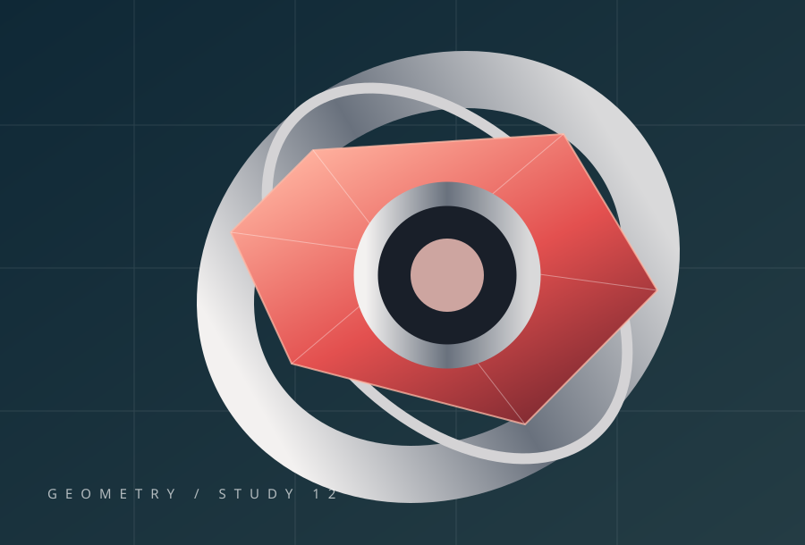
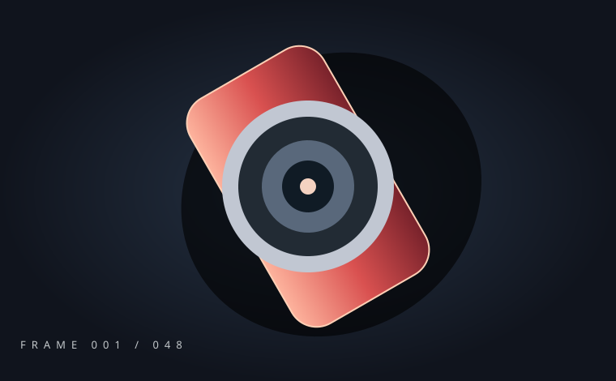

01 / TRANSITIONS
A / FIRST FORM
Cinematic Page Transition
Shared-element state updates with native view transition or WAAPI fallback.
EXPLORE WHAT'S POSSIBLE
12 independent creative interaction systems. A browser-based laboratory for motion, image, material, and layout design.
DISCOVER SYSTEMSCOLLECTION / ALL 12 SYSTEMS
Shared-element state updates with native view transition or WAAPI fallback.

MOVE POINTER TO EXPLOREPointer parallax, revealing mask, displacement data and flip functions.
Motion of complete text runs for correct Persian/Arabic shaping.
Scroll-conditioned staggered grid transforms and reflow planning.
Topology-normalized point morphing and bidirectional interpolation.

001 / 048Locally generated 48-frame demonstration, scroll-to-frame mapping and LRU.
Six MeshPhysicalMaterial parameter presets; CSS preview does not simulate PBR.
Deterministic mass–spring–damping integration and AABB collision.
Spatial directional navigation and route-state planning with DOM fallback.
Validated variant state with undo, URL serialization and optional 3D binding.
Honest resource-readiness gating with failure and reduced-motion paths.
Deterministic asymmetry, type scale, negative space and mobile-safe layouts.